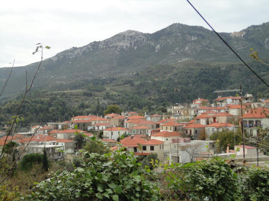
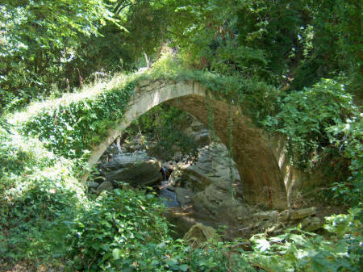
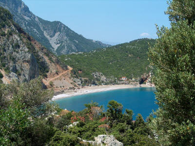
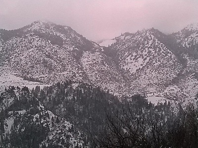
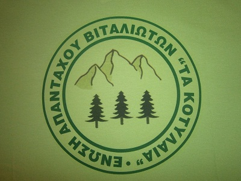

 Το χωριό Βίταλα βρίσκεται περίπου 5 χιλιόμετρα δυτικά της Κύμης και αποτελείται από 640 μόνιμους κατοίκους. Είναι κτισμένο στoυς πρόποδες των βουνών Ορτάρι και Αλοκτερή, σε υψόμετρο 240 μέτρων, σ' ένα καταπράσινο τοπίο, γεμάτο δέντρα και ιδιαίτερα συκιές.
Η κύρια ασχολία των κατοίκων είναι η γεωργία. Τα προϊόντα που παράγονται ως επί το πλείστον, είναι τα γευστικότατα κεράσια και τα περίφημα σύκα της περιοχής Το Βίταλο κατάφυτο από συκεώνες συμβάλει στην οικονομική ανάπτυξη της ευρύτερης περιοχής.Τα τελευταία χρόνια δημιουργήθηκε στο χωριό , από τον Αγροτικό Συνεταιρισμό Περιφέρειας Κύμης, μονάδα αποξήρανσης επεξεργασίας των σύκων, τα οποία διατίθενται στην αγορά με την ονομασία «Σύκα Κύμης».
Στην είσοδο του χωριού, και συγκεκριμένα στον οικισμό «Καζάρμα» , βρίσκεται η είσοδος της πρώτης στοάς λιγνιτωρυχείων της Κύμης που ξεκίνησαν το 1834 και η οποία αποκαλείται «στοά του Όθωνα».Στην πρόσφατα ανακαινισμένη πλατεία του χωριού , ο επισκέπτης αντικρίζει τον επιβλητικό καθεδρικό ναό του χωριού , το ναό του Αγίου Νικολάου και Κων/νου και Ελένης. Πρόκειται για μία πέτρινη εκκλησία χτισμένη τον 18 αιώνα με την περίφημη πέτρα Βιτάλου.
Σημείο αναφοράς ο παραδοσιακός πέτρινος νερόμυλος στην περιοχή Μουρές, απομεινάρι της εποχής που το νερό αποτελούσε την κινητήρια δύναμη για το άλεσμα των καρπών της γης θυμίζοντας μας ένα πολιτισμό της χρηστικότητας και της αισθητικής ισορροπίας που ήκμασε για πολλούς αιώνες στην ελληνική ύπαιθρο.Η περιοχή χαρακτηρίζεται από τις φυσικές πηγές με τα κρυστάλλινα νερά τους, τόσο στις Μουρές όσο και στην Περικοπία, την πλούσια βλάστηση στις ρεματιές με τα πανύψηλα πλατάνια και τα πυκνά φυλλώματα. Θα μπορέσει ο επισκέπτης να επισκεφτεί τα αρκετά μεταβυζαντινά εξωκλήσια της περιοχής, τους Αγ. Απόστολους, την Αγ. Αικατερίνη, τον Αγ. Μανδήλιο .
 Στην περιοχή Παναγίτσα ή διαφορετικά Aγιος Μανδήλιος υπάρχουν τα απομεινάρια από το επιβλητικό Ενετικό κάστρο, που είχε κτιστεί στα χρόνια της Δυτικής κυριαρχίας, το οποίο και αποδεικνύει και τη σημασία της ευρύτερης περιοχής.Το έντονο ωραιογραφικό ανάγλυφο της διαδρομής από το χωριό προς τον κάμπο θα γοητεύσει τον επισκέπτη, μιας και η φύση έχει σταθεί αρκετά γενναιόδωρη στα Βίταλα. Η θέα του λιμανιού της Κύμης καθώς και του Αιγαίου είναι καταπληκτική.0 Τσίλαρος και τα θαψά είναι δύο κόλποι στα βόρεια του χωριού με πολύ καθαρή αμμουδιά και νερά κατάλληλα για κολύμπι.
Η παραλία του Τσιλάρου απέχει από τον κεντρικό δρόμο περίπου 5 χμ. και ο δρόμος είναι ομαλός χωματόδρομος. Είναι πανέμορφη παραλία με άσπρο βότσαλο και γαλαζοπράσινα πεντακάθαρα νερά. Οι κατάφυτες πλαγιές του βουνού φτάνουν ως το κύμα. Η παραλία έχει βόρειο προσανατολισμό και το χειμώνα η μανία του Αιγαίου πλημμυρίζει την παραλία, φτάνοντας το νερό πολλές φορές ως τον δρόμο και τα λιγοστά σπιτάκια . Σπαρμένα βράχια στην αμμουδιά αλλά και στη θάλασσα, χωρίζουν της ακτή σε μικρότερες απομονωμένες παραλίες, όπως αυτή του Καλαμιού. Προσφέρουν τη σκιά τους στους κολυμβητές, ρομαντικές βαρκάδες και ευχάριστες προκλήσεις.Η παραλία του Θαψά βρίσκεται μετά από αυτήν του Τσιλάρου. Είναι πολύ κλειστός κόλπος με προσανατολισμό προς τη Δύση και έχει άσπρο ψιλό βότσαλο. Είναι ήρεμος και δεν επηρεάζεται από κανένα άνεμο. Η καθαρή Θάλασσα, το πράσινο τοπίο τα πολλά ψάρια που μπορεί εύκολα κάποιος να πιάσει, υπόσχονται στον επισκέπτη αξέχαστες διακοπές.
 Τα βίταλα διαθέτουν εξαιρετικές ταβέρνες, όπου επισκέπτης μπορεί να δοκιμάσει παραδοσιακές γεύσεις και να προμηθευτεί παραδοσιακά προϊόντα εξαιρετικής ποιότητας (σύκα, κεράσια, ζυμαρικά, αμυγδαλωτά). Στιγμές χαλάρωσης απολαμβάνεις συντροφιά με ένα καφέ και γλυκό του κουταλιού στα καφενεία στην πλατεία των Βιτάλων, στις Μουρές κάτω από τα πλατάνια αγναντεύοντας τα βουνά.
Κατά τη διάρκεια του καλοκαιριού και κυρίως στα πλαίσια των θρησκευτικών εορτών της Παναγίας, οργανώνονται πλήθος πολιτιστικών εκδηλώσεων, με αποκορύφωμα την Γιορτή Σύκου στις 16 Αυγούστου.Στο Βίταλο δεν είναι δύσκολο να συνδυάσεις την ομορφιά με την παράδοση, το μέλλον με την ιστορία, τη μορφολογία του με την ψυχοσύνθεση των ανθρώπων του. Η όλη φυσιογνωμία του χωριού με τους καθαρούς δρόμους, τα παραδοσιακά σπίτια με την ιδιαίτερη αρχιτεκτονική και τη διακόσμηση στους τοίχους, στις κεραμοσκεπές, στα πορτοπαράθυρα και στα μπαλκόνια, τα γραφικά περιβόλια, τα καλλιεργήσιμα χωράφια με συκιές, κερασιές, ελιές, ικανοποιεί αισθητικά και ευφραίνει ψυχικά τον κάθε επισκέπτη.
 Οι άνθρωποι του Βιτάλου είναι ζεστοί και απίστευτα φιλόξενοι. Δεν θα νιώσετε σε καμιά στιγμή ότι είστε επισκέπτες, αλλά θα σας δοθεί η εντύπωση, ότι βρίσκεστε ανάμεσα σε φίλους και γνωστούς από χρόνια.
Οι πολιτιστικοί σύλλογοι αποτελούν πραγματικούς φάρους για τη χώρα, και επιτελούν σοβαρή και αθόρυβη εργασία με στόχους, ιδανικά και συνήθως κάτω από δύσκολες συνθήκες.Ο Σύλλογος Βιταλιωτών «ΤΑ ΚΟΤΥΛΑΙΑ» ιδρύθηκε το 1983, στις 24 Απριλίου από μία ομάδα που είχε σαν κύριο στόχο της την επικοινωνία των Βιταλιωτών Αττικής καθώς και τη στήριξη των αξιών της Βιταλιώτικης παράδοσης.Μεταξύ των άλλων σκοποί του Συλλόγου είναι η σύσφιξη των σχέσεων μεταξύ των μελών, η καλλιέργεια του πνεύματος, η συναδέλφωση, η παροχή υλικής και ηθικής ενίσχυσης της νεολαίας των Βιτάλων για την εξύψωση του μορφωτικού και πολιτιστικού της επιπέδου, η συμβολή στην τουριστική ανάπτυξη του χωριού, η ανάπτυξη του αθλητικού πνεύματος, η προστασία και η ανάδειξη της φυσικής ομορφιάς της περιοχής, η παρακολούθηση των προβλημάτων που απασχολούν την περιοχή και η άμεση επίλυσή τους.
Με την ίδρυση του Συλλόγου Βιταλιωτών «ΤΑ ΚΟΤΥΛΑΙΑ» συσπειρώθηκε το Βιταλιώτικο στοιχείο και από κει και πέρα ο Σύλλογος εκπονεί ετήσια πολιτιστικά προγράμματα με εκδηλώσεις πολιτιστικού, θρησκευτικού και ιστορικού περιεχομένου υψηλού επιπέδου, καθώς και εκδρομές σε διάφορους ιστορικούς και αρχαιολογικούς χώρους. Μέσα στο όλο πλαίσιο διοργανώνονται και συνεστιάσεις και ευχάριστες διασκεδάσεις, απαραίτητες στην πόλη που ζούμε.
Πέρα των ανωτέρω, έχει αναπτύξει σχέσεις αγάπης και καλής συνεργασίας, με τους πολιτιστικούς φορείς της ευρύτερης περιοχής, αλλά και της Αθήνας, συνεργασία η οποία έχει δώσει θαυμάσια αποτελέσματα.Τον Φεβρουάριο του 2004 με τη συμμετοχή των Βιταλιωτών πραγματοποιούνται οι αρχαιρεσίες του Συλλόγου, όπου εκλέγεται Πρόεδρος ο Σταύρος Στ. Γέραλης και θεσμοθετούνται από το προεδρείο του Συλλόγου σημαντικές εκδηλώσεις.Καθιερώνεται ετήσιο μνημόσυνο, για τον Ευεργέτη του χωριού Ευάγγελο Δεμερούτη, την πρώτη Κυριακή κάθε Μάρτη. Τον Μάιο του 2004 ο Σύλλογος προβαίνει στην Ίδρυση Τράπεζας αίματος με έδρα το Λαϊκό Νοσοκομείο Αθηνών, εις μνήμη Ευάγγελου Δεμερούτη με γραμματέα της Τράπεζας την πατριώτισσα μας Αθ. Κρινή.
 Στις 16 Αυγούστου του 2005 πραγματοποιείται στο Βίταλο η 1η Γιορτή Σύκου η οποία συνδιοργανώθηκε με τον Δήμο Κύμης και σημείωσε μεγάλη επιτυχία και καθιερώνεται ο εορτασμός του θεσμού κάθε έτος, την ίδια ημερομηνία.Επίσης προχώρησε στην απονομή αναμνηστικών πλακετών στους διατελέσαντες προέδρους του Συλλόγου ως αναγνώριση του πολύτιμου έργου τους.Ο Σύλλογος, εκτός των ανωτέρω εκδηλώσεων που θεσμοθέτησε, συνέχισε να διοργανώνει τις καθιερωμένες κοινωνικές πολιτιστικές και ψυχαγωγικές εκδηλώσεις κάθε χρόνο, όπως η κοπή της πίτας, αποκριάτικο γλέντι, καλοκαιρινή χοροεσπερίδα, γιορτή του Κων/νου και Ελένης πολιούχων του Βιτάλου, εκδρομές θρησκευτικού και πολιτιστικού περιεχομένου, εκδηλώσεις για την διασκέδαση των παιδιών με τη συμμετοχή κλόουν και το μοίρασμα δώρων, καθώς και τη προσπάθεια δημιουργίας τμημάτων εκμάθησης και παρουσίασης πανελλήνιων αλλά και τοπικών παραδοσιακών χορών.
Μετά την εφαρμογή του Σχεδίου Καποδίστριας, όπου οι Κοινότητες συγχωνεύθηκαν σε Δήμους, ο Προοδευτικός Σύλλογος Απανταχού Βιταλιωτών «ΤΑ ΚΟΤΥΛΑΙΑ», καλείται να αναλάβει πιο ενεργό ρόλο σαν θεματοφύλακας των ιδιαιτεροτήτων του τόπου μας. Για το σκοπό αυτό συμβάλει στην ενίσχυση και ανάδειξη των εθίμων, των προϊόντων και της ομορφιάς του χωριού μας.Όπως το σύνολο των πολιτιστικών συλλόγων, έτσι και ο δικός μας, λειτουργεί στη βάση της εθελοντικής προσφοράς που είναι το θεμέλιο της ύπαρξης τους. Η εθελοντική κοινωνική προσφορά αποτελεί μία από τις μεγαλύτερες εκδηλώσεις ύπαρξης ευγενών αισθημάτων. Έχει όμως την ιδιαιτερότητα ότι κανείς δεν μπορεί να επιβάλει σε κάποιον ή κάποιους ρυθμούς εργασίας. Έτσι απαιτείται η κατανόηση για κάποιους ρυθμούς που μπορεί σε κάποιες στιγμές να φαίνονται αργοί, που όμως όταν το απαιτούν οι περιστάσεις με κινητήρια δύναμη την φιλοτιμία, γίνονται εκπληκτικά γρήγοροι, ξεπερνώντας κάθε προσδοκία.
Ο σύλλογός μας λειτουργεί σαν συνεκτικός κρίκος μεταξύ των εχόντων κοινή καταγωγή, τόσο στο εσωτερικό της χώρας αλλά και στο εξωτερικό. Συμβάλλει στην κατανόηση των ιδιαιτεροτήτων, των προβλημάτων. Μας φέρνει όλους πιο κοντά και με μια φωνή αγωνιζόμαστε, διεκδικούμε, περνάμε καλά και φυσικά χαμογελάμε.Η δημιουργία και προβολή της ιστοσελίδας μας, έχει σαν στόχο αφ' ενός μεν να αναπτύξει τον προβληματισμό για την τεκμηρίωση του ρόλου των συλλόγων στη σύγχρονη κοινωνία και αφ' ετέρου να δώσει τη δυνατότητα για την συγκέντρωση μεγαλύτερου αριθμού ενεργών μελών και φίλων ώστε να τους δοθεί η δυνατότητα να καταστούν ένας σημαντικός πυρήνας αλλά και ισχυρός συνδετικός κρίκος ανάμεσα στο χθες και το αύριο με γέφυρα το σήμερα.
Οι πρόεδροι που διατέλεσαν στον Σύλλογο Βιταλιωτών «ΤΑ ΚΟΤΥΛΑΙΑ» είναι οι εξής :
1ος Κων/νος Α. Δεμερούτης 24-04-1983 έως 03-04-1985
2ος Γεώργιος Θ. Μανδράκας 04-04-1985 έως 16-03-1989
3ος Ιωάννης Κ. Φαφούτης 17-03-1989 έως 07-05-1991
4ος Αντώνης Ε. Δεμερούτης 08-05-1991 έως 01-06-1993
5ος Αναστάσιος Α. Χρηστάκης 02-06-1993 έως 24-05-1995
6ος Δημήτριος Καρκάνης 25-05-1995 έως 10-06-1997
7ος Κων/νος Χ. Ντοβίνος 11-06-1997 έως 05-06-1999
8ος Δημήτριος Καρκάνης 06-06-1999 έως 07-02-2004
9ος Σταύρος Στ. Γέραλης 08-02-2004 ως 12-02-2006
10ος Αντώνιος Ντερνελής 13 - 02 - 2006 έως 17-3-2012
11ος Βελισσαράκος Ευστάθιος 17-3-2012 έως 22-3-2014
12ος Βαρλάμου Ευαγγελία από 23-3-2014 έως σήμερα..
ΤΟ ΔΙΟΙΚΗΤΙΚΟ ΣΥΜΒΟΥΛΙΟ ΤΟΥ ΣΥΛΛΟΓΟΥ
Τις 19 Μαΐου 2014, πραγματοποιήθηκες στο χώρο του Κοινοτικού γραφείου «Δεμερούτειο Πνευματικό Κέντρο» ψηφοφορία για την εκλογή νέου Διοικητικού Συμβουλίου του Συλλόγου. Το νεο Δ.Σ του Συλλόγου έχει ως εξής:
ΠΡΟΕΔΡΟΣ
ΒΑΡΛΑΜΟΥ ΕΥΑΓΓΕΛΙΑ
ΓΡΑΜΜΑΤΕΑΣ
ΜΠΑΜΠΑΡΑΚΟΥ Θ ΣΤΑΜΑΤΙΑ
ΑΝΤΙΠΡΟΕΔΡΟΣ
ΚΥΤΡΟΥ ΣΕΡΑΦΟΥΛΑ
ΤΑΜΙΑΣ
ΞΟΥΡΗ ΕΛΕΝΗ
ΕΥΦΟΡΑΣ
ΔΕΜΕΡΟΥΤΗ ΕΛΕΝΗ
ΜΕΛΗ
ΜΠΑΜΠΑΡΑΚΟΥ ΘΕΟΔΩΡΑ
ΙΑΚΩΒΟΥ ΑΝΝΑ
ΡΟΥΣΣΑΛΗ ΕΛΕΝΗ
ΚΑΠΕΛΕΡΗΣ ΓΕΩΡΓΙΟΣ
Υπεύθυνοι ιστοσελίδας:
Κωνσταντίνος Ιακώβου
Χρήστος Λύκος